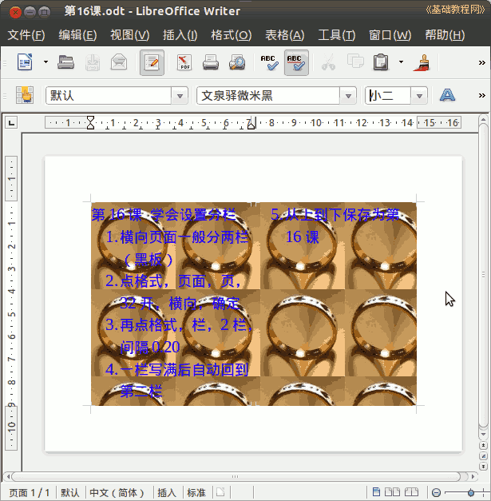

2011-2012 第二学期七年级文字处理和网页教学设计
作者：TeliuTe 来源：基础教程网
十六、学会设置分栏 返回目录 下一课
（一）教学设计
1、学习目标：学会设置分栏
2、注意事项：把前面学过的都用上，调整字体让到两栏显示。
3、教学过程：
1）教师准备学案和板书；
2）学生整队进入，开机抄黑板上笔记；
3）教师讲解板书演示操作；
4）学生打指法、日志、完成操作；
5）教师打勾记录学生指法成绩，检查日志和操作；
注：学生抄完笔记就开始打指法、日志，老师讲完后再继续完成；
（二）板书设计(学生笔记)
--板书设计--
第16课 学会设置分栏
1、横向页面一般可分为两栏（黑板）
2、点格式、页面、页 32开、横向、确定
3、再点格式、栏、2栏、间隔0.20
4、一栏写满后，自动到第二栏
5、从上到下保存为第16课
操作图示：

（三）课后记
早上发个通知，让参加一个读书活动的竞赛
天天上课累的哪有精力搞这些，七、八年级水平不行，九年级要中考
--
先通知下去，后面挑几个学生做的好一些的
竞赛这一块还腾不手来，光上课都够费脑筋
--
这节接着学页面里的菜单，把分栏学习一下
果然是太简单了，或者说基本上一讲就会
--
卡在打字上费时间，操作上基本没什么问题
把上节的背景图再复习一下，这样基本就可以了
--
差的顾不过来，前面可以看一下，
后面得去检查练习结果，可能自己去玩了
--
下午又来说要上课本剧，坚决不允许
惯成毛病，然后也给学生说旷课的后果做不出来就等着挨训
--
调皮的一定要及时管，不用生气定住心气训后果
italc还是老卡，先给学生说好，让消化一下老师讲的
--
农场后面再开，应该是调用的时候读写数据库
这样的话需要一个什么样的文件系统，得看下数据表的大小
--
把容易错的地方提前找出来，写好放在笔记里
学生在录入的时候，就可以先熟悉一下，再操作就容易了
--
对着机子讲了，不对着黑板，只在需要的时候看看黑板
这样学生的注意力可以一直在电脑上，这样也挺好
--
只是不知学生是否认真听了，提醒没有控制的学生
先看旁边的，免得做不出来又讲两遍
--
返回目录 下一课
本教程由86团学校TeliuTe制作|著作权所有
基础教程网：http://teliute.org/
美丽的校园……
转载和引用本站内容，请保留作者和本站链接。